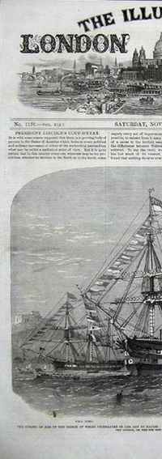
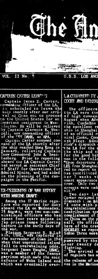
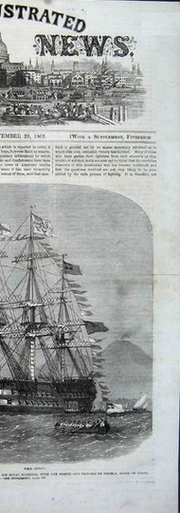
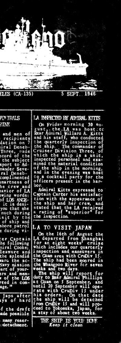

|


|
11/26/2010 Weekly Impressions #10.47 OFF the Dial
"after moving to Victoria, Jzero Schuurman (formerly of Calgary’s GutterAwl) has teamed up with Rob Coslett,
Renee Crawford and Fraser MacGillvray to form the Dyeing Merchants. Dubbing themselves “alternative, anthemic,
experimental indie noise pop”, they’ve just released their self-titled debut
(which you can get here for the low low price of, you name it!). The album is a great collection of laid back atmospheric
songs that sound like a rehearsal space jam session. Songs like “Tides”, “Forget” and “Walls” make me feel like I’m hanging
out with some very talented friends just relaxing on a Friday night. That’s the Dyeing Merchants."
01/17/2011 Becky's New Car, End of the Affair and the Dyeing MerchantsThe Province
"This Victoria indie band describe themselves as shoe-gazers on their Myspace page, showing a refreshing honesty.
Their self-titled CD is a pleasingly low-fi blend of up-front guitars, some synth sounds, and vocals soaked in ambient
room noise."
01/18/2011 The E-List The Province
"This Victoria indie band shows a refreshing honesty. Their self-titled CD is a pleasingly low-fiblend of upfront guitars,
synth sounds, and vocals soaked in ambient room noise."
01/09/2011 Starting Out In Victoria: A Musical Odyssey Featuring Slam Dunk and a Host of Others
Monday Magazine
"the Dyeing Merchants took over; it was the first time I have ever seen or heard a “Guitorgan”,
which gave the band a full, unique sound."
Note: our guitorgan had been broken for some time and wasn't functioning for this show??
02/28/2011 The Dyeing Merchants – A Thousandth Of A Degree Off-Kilter
A New Band A Day
How do songs come about, hey? Yes, yes – that’s hopelessly vague as far as opening queries go, I know, but bear with me.
As someone who has always failed horribly at writing songs – an admission which almost wholly explains vicarious activities
like, say, writing about a new band every day – this has always proven an awful puzzle.
Where do songs come from? How do you start writing one? How do you decide which bit is the verse and which is the chorus?
Do you have to write middle eights for yourself or is there an App that does that for you now?
Such concerns are of no mystery to The Dyeing Merchants, for whom – if All In All is anything to go by – the songwriting
process is as organic and steadily encompassing as a vine creeping up a garden wall.
In fact, take note BBC documentary makers, because All In All could happily soundtrack a time-lapse film of a seed’s
struggle from soil, to green shoot, to flower and back again, so redolent is the song of the ebb and flow of life itself.
Guitar bands have an unenviable task in front of them – they are committed to tackling the same four-minute-pop-song task
as every other band has been doing for the last 60 years, and it’s hardly a surprise when they end up grinding out the same
old ditties.
But occasionally a band manage to shift their angle of attack by a thousandth of a degree – and the effect is palpably
different. It’s just a hunch, but in songs like All In All, The Dyeing Merchants may be doing exactly this.
Charts! courtesy of !Earshot
Dec.07
CFUV #10 new entry (2010)
January earshot #93 nationally
Jan. 11
CHMA # 28 new entry
CFUV # 11 re-entry
Jan. 18
CJSR # 26 new entry
CFUV # 13-11
CHMA # 20-28
CJSW # 10 new entry
earshot national charts #33 new entry!!
Jan. 25
CFUV # 16-13
CJSW # 21-10
CHARTattack top 50 # 41
Feb.01
CFUV # 4-16
CKXU # 6 new entry!!
CHOU # 29 new entry
Feb.02
CHOQ # 9 Indie charts
Feb.08
CKXU # 6-6 second week @ #6!
CJSW # 40
Feb.15
CKXU # 1-6 #1 is great guys!!!
CHMR # 7 new entry
CJSW #40
Feb.22
CHUO #16
CHMA #26
Mar. 01
CHMR #5!
CHMA #25-26
|


|